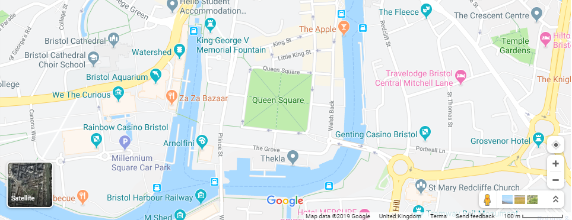
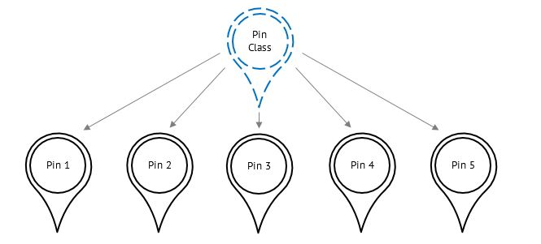

1. Fundamentals of Object-Oriented Programming |
| In this chapter you will learn: |
|---|
|
There are many different programming styles that can be used to create computer programs. One of these styles (known as programming paradigms) that you are likely to be familiar with is procedural programming. In procedural programming, every variable, constant and subroutine is defined separately, and have no inherent relationships between each other.
Another commonly used programming paradigm is object-oriented programming. Object-oriented programs define separate objects that have their own associated values and subroutines. This means that values and subroutines can be easily grouped together in a logical way. Consider this interactive map application:

In an object-oriented program, each location pin would be defined as a different object. Each pin object would have its own associated values, such as its name, its location and what it is marking (e.g. a train station or a restaurant). Each pin object would also have some associated subroutines, such as bringing up a list of more detailed information if the pin is clicked, or allowing for the pin’s information to be updated.
Object-oriented programming is primarily used because of the advantages of three of its core concepts (each explained fully in later chapters):
As object-oriented programs can have many different objects, many of which share similar features, code does not need to be written to define the properties of each individual object. Instead, a framework for a type of object (known as a class) is created. For example, the Pin class may look like this:
The keyword 'this' is used by an object to refer to itself, so when an object runs the 'new' subroutine, 'this.name = pinName' sets that pin's name to the value of 'pinName'
A Pin object could then be created using the Pin class:
The Pin class defines the values associated with a Pin object (in this case, name, location and markerType) and the subroutines that a Pin object can perform. The values associated with an object are known as attributes, and the subroutines associated with an object are known as methods.
The new method is a constructor – a method that creates an object of a particular class with its own attribute values. The process of creating an object from a class is known as instantiation, and an object is known as an instance of a class. You can think of classes as blueprints, and objects as the individual items created from those blueprints.

A class provides a template from which many objects can be created
Most attributes and methods are only relevant to a particular object. However, sometimes you may want an attribute or method that is relevant to the class as a whole. These are known as static attributes and static methods. For example, the Pin class could include a static attribute to count the number of existing Pin objects:
Notice that the static attribute is set using ‘Pin.count’ and not ‘this.count’ because the attribute belongs to the class and not just an object in the class. Similarly, static methods are called by ‘ClassName.method()’ whereas non-static methods are called by ‘objectName.method()’.
If there is an attribute or method in a class that you may want to use even if there are no instances of that class, it should be static.
The following pseudocode program:
... would be written in C# as:
Note that, in C#, you must declare the types of all attributes and return types of all methods that you use, with the exception of the constructor method, which is declared using the class name and does not have a return type.
| Q1 | Define the term programming paradigm. (1 mark) |
|---|---|
| Q2 | Explain the difference between object-oriented programming and procedural programming. (2 marks) |
| Q3 | Explain the difference between a class and an object. (2 marks) |
| Q4 | Identify a situation where a static method may be used. (1 mark) |
| Q5 | Using pseudocode, write a class with relevant attributes and methods to represent a digital clock object. It should represent the time as a 24-hour clock, and include methods to create a new object, set the time manually, display the time, and update the time at the end of each minute. (6 marks) |
|
This activity uses the following files: The Task 1 skeleton code is part of a program that allows a user to create a bank account, login to their account, check their balance and deposit or withdraw money from their account. It defines an Account class, that stores information about the individual bank accounts, and a Bank class, that holds all of the bank accounts and performs operations on individual accounts when asked to by the user. Add the missing attributes and method logic to the Task 1 skeleton code to complete its functionality. No changes should be made to main, no new methods should be defined, and the parameters that the methods use should not be changed, deleted or added to. (15 marks) |